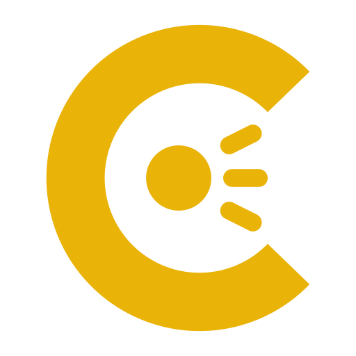

Aldis Lamp
Speak or type, and the lamp flashes it in Morse. Point the camera at a lamp to read one back.
Transmit
Speech is transcribed by the browser and queued word by word. Finished words go straight to the lamp.
Receive
Works on a real lamp, a phone torch, or this page's own strobe held up to the camera.
Lamp & output
Characters keep the speed above; the gaps between them stretch to the slower overall speed. Real Aldis work sits around 6–12 WPM.
Do both of these while you still have a connection. After that the lamp, the decoder and — with the pack installed — the microphone all work with the radio off.
About the lamp
An Aldis lamp is a handheld signalling lamp with a trigger-operated shutter, used at sea to talk between ships without a radio. This page puts one behind your voice: what you say is transcribed, spelled out in Morse, and flashed at a signalling speed you can actually read.
The lamp, the keyer and the decoder run in this page, and the camera image never leaves it. Speech goes to the browser's own recogniser: in Chrome that runs on Google's servers unless the on-device speech pack is installed (Setup › Prepare for offline).
Add it to your home screen and it keeps working with no connection at all — the light, the decoder, and the microphone too once a speech pack is downloaded.
Runs in your browser. Nothing you add here is uploaded. In Chrome, speech is recognised by Google’s servers unless the on-device pack is installed.